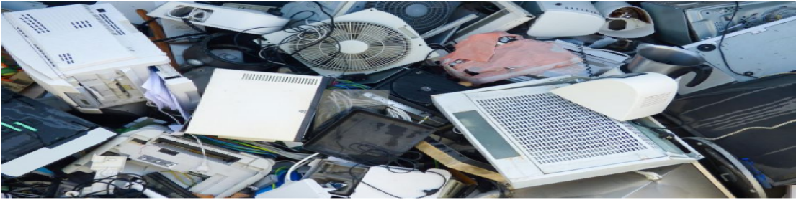

E-WASTE & E-WASTE MANAGEMNET
HOME GOOD PRACTICES IMPORTANCES TYPES & EXAMPLES GALLERY
E-WASTE; A generic term used to describe all types of old end of life or dicarded electrical and electronic equipment
E-WASTE MANAGEMENT; the process of collecting, transporting, recycling, refurbishing, and disposing of electronic waste in an environmentally-friendly way
IMPORTANCEOF
PROPER E-WASTE DISPOSAL
Many people understand the general importance of recycling, but what of the particular importance of proper e-waste disposal? For starters, electronic devices are rich sources of valuable raw materials and metals such as gold, copper, aluminum, cobalt, indium, antimony, and palladium- to mention a few. If e-waste is recycled correctly, these valuable materials can be repurposed, reducing the need to mine them fresh from the earth.
Another importance of proper e-waste disposal is the reduction of solid waste production. Precious minerals and metals aside, electronic devices are also made up of other materials such as plastic and ceramic. Proper e-waste disposal ensures that these different forms of waste that do not decompose easily do not end up in landfills polluting our environment. Finally, another critical importance of proper e-waste disposal is the reduction of carbon emissions. Companies that use recycled materials to manufacture new products expend less energy than they would if they mined and sourced for brand new raw materials. Proper e-waste disposal is a win for humans everywhere, in the environment, for our health, and even from a commercial perspective.